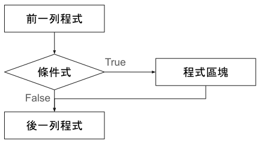
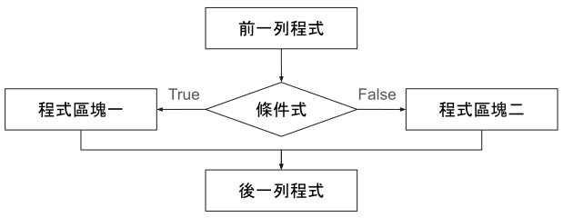
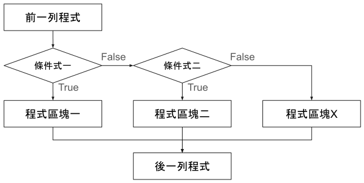
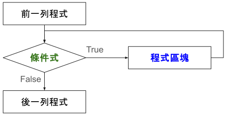
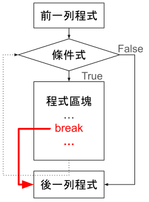
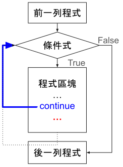
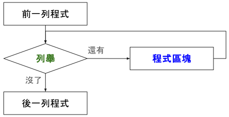
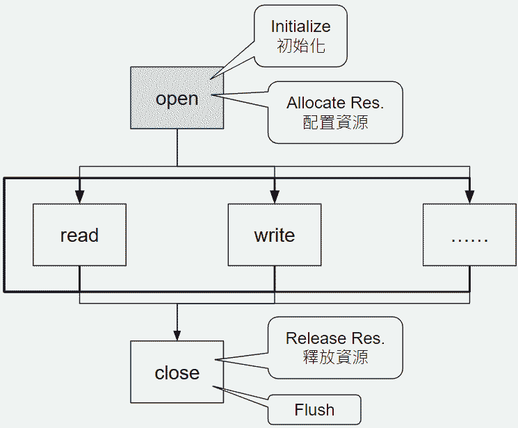
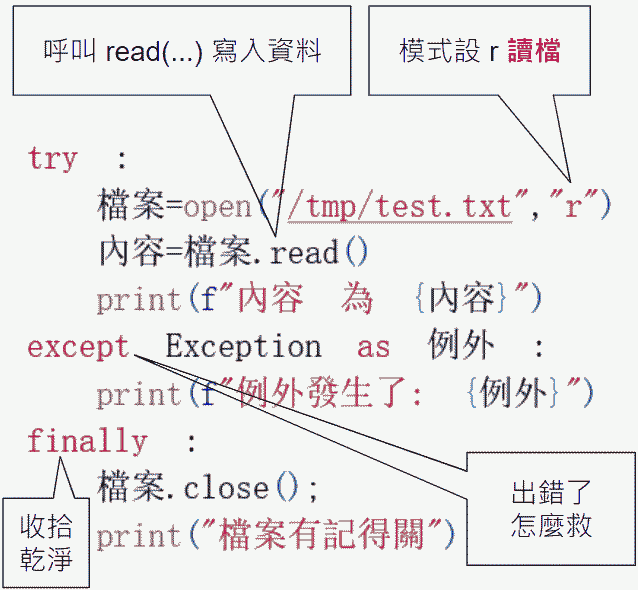
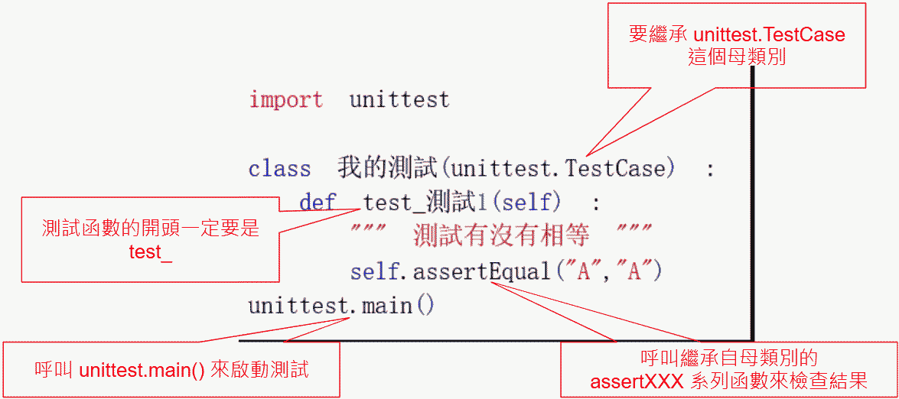

Python, An Introduction to
🔢 內建型別轉換函數
| 函式 | 功能 | 範例 | 結果 |
|---|---|---|---|
| int(x) | 將 x 轉換成整數 | int(34.21) | 34 |
| float(x) | 將 x 轉換成浮點數 | float("56") | 56.0 |
| hex(x) | 將 x 轉換成十六進位數字 | hex(34) | 0x22 |
| oct(x) | 將 x 轉換成八進位數字 | oct(34) | 0o42 |
| str(x) | 將 x 轉換成字串 | str(56) | 56 ( 字串 ) |
請問變數宣告後它們的資料類別依序是？
age = 12
| int | float | str | boolean |
|---|
minor = False
| int | float | str | boolean |
|---|
name = 'David'
| int | float | str | boolean |
|---|
weight = 64.5
| int | float | str | boolean |
|---|
zip = '545'
| int | float | str | boolean |
|---|
您必須識別各種類型作業的資料類型。
請將左側清單中適當的資料類型移至右側的正確類型作業。
每種資料類型可能只使用一次,也可能使用多次,甚至完全用不到。
type(5.0)
| int | float | str | boolean |
|---|
type('True')
| int | float | str | boolean |
|---|
type(False)
| int | float | str | boolean |
|---|
type(+1E10)
| int | float | str | boolean |
|---|
age = input("Enter your age: ")
while (index <10)
if numbers(index) = 6
該銀行雇用您來記錄已移轉的程式碼。
請問哪個文件記錄語法是正確的?
此程式會根據客戶所記錄的英里數傳送訊息。


舊式
請從每個下拉式清單中選取正確的選項以完成有關assert方法的敘述。
# age 的資料型態為
| int | str | boolean |
|---|
year = input("Enter the four-digit year: ")
born = eval(year) - eval(age)
# born 的資料型態為
| int | str | boolean |
|---|
message = "You were born in " + str(born)
# message 的資料型態為
| int | str | boolean |
|---|
print(message)
您建立了下列程式來找出會議室並顯示房間名稱。
rooms = {1: 'Foyer', 2: 'Conference Room'}
# 請問哪兩種資料類型儲存在 rooms 清單中？
room = input('Enter the room number: ')
# 請問 room 是哪種資料類型？
if not room in rooms:
# 為什麼上方判斷式無法尋找房間？
print('Room does not exist.')
else:
print("The room name is " + rooms[room])
🔢 內建數學函數 (math)
| 函式 | 功能 | 範例 | 結果 |
|---|---|---|---|
| abs(x) | 取得 x 的絕對值 | abs(-5) | 5 |
| pow(x, y) | 取得 x 的 y 次方 | pow(2, 3) | 8 |
| round(x) | 以四捨六入法取得 x 的近似值 | round(45.8) | 46 |
| divmod(x, y) | 取得 x 除以 y 的商及餘數的元組 | divmod(44, 6) | (7, 2) |
| max(參數串列) | 取得參數串列中的最大值 | max(1,3,5,7) | 7 |
| min(參數串列) | 取得參數串列中的最小值 | min(1,3,5,7) | 1 |
您正在將現有的應用程式轉換成Python。
您需要正確編寫所有算數運算式的程式碼。
請依運算元優先順序由高到低依序選取 ?
| 最高優先權 | |
|---|---|
| 第二高 | |
| 第三高 | |
| 第四高 | |
| 第五高 | |
| 最低優先權 |
計算下列 Python 數學運算式
5 * (1+2) ** 2 - 3 + 4 / 2
| 5 | 8 | 44 | 22 |
|---|
您執行下列程式碼。請問結果為何?
value1 = 9
value2 = 4
answer = (value1 % value2 * 10) // 2.0 ** 3.0 + value2
輸出 129
發生語法錯誤
輸出 5.667
輸出 5.0
你設計了一個數學運算的 Python 程式，程式碼如下：
a = 21
b = 5
請問 print(a / b) 將輸出什麼 ?
| 4.2 | 4 | 1 |
|---|
請問 print(a // b) 將輸出什麼 ?
| 4.2 | 4 | 1 |
|---|
請問 print(a % b) 將輸出什麼 ?
| 4.2 | 4 | 1 |
|---|
您執行下列程式碼，請問輸出值為何 ?
list_1 = [1,2]
list_2 = [3,4]
list_3 = list_1 + list_2
list_4 = list_3 * 3
print(list_4)
[1, 2, 3, 4, 1, 2, 3, 4, 1, 2, 3, 4]
[[1, 2, 3, 4], [1, 2, 3, 4], [1, 2, 3, 4]]
[3, 6, 9, 12]
[[1, 2], [3, 4], [1, 2], [3, 4], [1, 2], [3, 4]]
某間銀行必須產生一份報表來顯示所有客戶每天的平均。
這份報表必須截斷餘額的小數部分。
請問哪兩段程式可以使用 ?
average_blance = int(total_deposits/number_of_customers)
average_blance = total_deposits//number_of_customers
average_blance = total_deposits**number_of_customers
average_blance = float(total_deposits//number_of_customers)
函式必須執行下列工作:
- 提取浮點數(float)的絕對值
- 移除整數後面的任何小數點。
請問您應該使用哪兩個數學函式?。
math.floor(x)
math.fabs(x)
math.frexp(x)
math.fmod(x)
您撰寫了以下這段程式碼:
請評估這段程式碼,然後從每個下拉式清單中選取正確的選項以回答問題。
a = 'Config1'
print(a)
b = a
a += 'Config2'
print(a)
# 請問顯示的內容為何 ?
print(b)
# 請問顯示的內容為何 ?
您正在撰寫一個Python程式來評估算數公式。
此公式描述為b等於a乘以負一之後再平方。其中a是即將輸入的成績,而b是結果。
您所建立的程式碼片段如下。加上行號僅為參考之用。
a= eval(input("Enter a number for the question:"))
b=
⚙️ 內建字串函數 (string)
| 函式 | 功能 | 範例 | 結果 |
|---|---|---|---|
| len( 字串 ) | 取得字串長度 | len("book") | 4 |
| find(s) | 搜尋 s 字串在字串中的位置 | "book".find("k") | 3 |
| 函式 | 功能 | 範例 | 結果 |
| center(n) | 將字串擴充為 n 個字元且置中 | "book".center(8) | " book " |
| ljust(n) | 將字串擴充為 n 個字元且靠左 | "book".ljust(8) | "book " |
| rjust(n) | 將字串擴充為 n 個字元且靠右 | "book".rjust(8) | " book" |
| 函式 | 功能 | 範例 | 結果 |
| strip() | 移除字串左方及右方的空白字元 | " book ".strip() | "book" |
| lstrip() | 移除字串左方的空白字元 | " book ".lstrip() | "book " |
| rstrip() | 移除字串右方的空白字元 | " book ".rstrip() | " book" |
| 函式 | 功能 | 範例 | 結果 |
| startswith(s) | 字串是否以 s 字串開頭 | "abc".startswith("a") | True |
| endswith(s) | 字串是否以 s 字串結尾 | "abc".endswith("c") | True |
| islower() | 字串是否都是小寫字母 | "Yes".islower() | False |
| isupper() | 字串是否都是大寫字母 | "YES".isupper() | True |
| 函式 | 功能 | 範例 | 結果 |
| lower() | 將字串元都轉為小寫字母 | "Yes".lower() | yes |
| upper() | 將字串元都轉為大寫字母 | "Yes".upper() | YES |
| s.join(list) | 將串列中元素以 s 字串做為連接字元組成一個字串 | "#".join(["ab", "cd", "ef"]) | ab#cd#ef |
| split(s) | 將字串以 s 字串為分隔字元分割為串列 | "ab#cd#ef".split("#") | ["ab", "cd", "ef"] |
| replace(s1, s2) | 將字串中的 s1 字串以 s2 字串取代 | "book".replace("o","a") | baak |
請問下列程式，print陳述式的輸出為何?
x = 'oranges'
y = 'apples'
z = 'bananas'
data = '{1} and {0} and {2}'
print( data.format(z,y,x) )
bananas and oranges and apples
apples and bananas and oranges
apples and oranges and bananas
oranges and apples and bananas
您需要列印資料,以便呈現出類似下面的範例:
Oranges 5.6 1.33 Apples 2.0 0.54 Grapes 10.2 10.96
具體而言,列印成品必須符合下列需求:
- 水果名稱必須在10個空格寬的資料行中靠左對齊列印。
- 重量必須在5個空格寬的資料行中靠右對齊列印,而且小數點後面最多一位數。
- 價格必須在7個空格寬的資料行中靠右對齊列印,而且小數點後面最多兩位數。
請完成下列程式
def print_table(file) :
data = open(file, "r")
for record in data :
fields = record.split(",")
".format(fields[0], eval(fields[1]), eval(fields[2])))
某食品公司需要一套程式，讓他們的客服中心能夠用來輸入新咖啡種類的問卷調查資料。
此程式必須執行下列工作 :
- 接受輸入(rating)。
- 傳回五星評比標準的平均評分(average)。
- 將輸出四捨五入到兩位小數。
sum = count = done = 0
average = 0.0
while done != -1 :
rating =
if rating == -1 :
break
sum += rating
count += 1
average = float( sum / count )
+)
您正在建立一個電子商務指令碼來接受使用者輸入並以逗點分隔格式輸出資料。
您撰寫了下列程式碼以接受輸入：
item = input('Enter the item name: ')
sales = int(input('Enter the quantity: '))
輸出必須符合下列需求:
- 以雙引號括住字串。
- 不以引號或其他字元括住數字。
- 以逗點分隔項目。
請問哪兩個可以符合要求?
print('{0},{1}'.format(item, sales))
print(item + ',' + sales)
print(''{0}',{1}'.format(item, sales))
print(''' + item + '',' + sales)
您正在為公司開發一個Python應用程式。
您需要接受使用者的輸入並將該項資訊輸出至使用者的畫面。
您從下列程式碼開始著手。
print("What is your name?")
print(name)
您正在建立一個比較數字的Python程式
num1 = eval(input ('Please enter the first number: '))
num2 = eval(input ('Please enter the second number: '))
if num1 == num2:
print('The two numbers are equal. ')
# 上述 print 陳述式只有在這兩個數字的值相等時才會列印。
| 正確 | 錯誤 |
|---|
if num1 <= num2:
print('Number 1 is less than number 2. ')
# 上述 print 陳述式只有在num1小於num2時才會列印。
| 正確 | 錯誤 |
|---|
if num1 > num2:
print('Number 1 is greater than number 2. ')
# 上述 print 陳述式只有在num1大於num2時才會列印。
| 正確 | 錯誤 |
|---|
if num2 = num1:
# 上述 if 陳述式是無效的比較。
| 正確 | 錯誤 |
|---|
print('The two numbers are the same. ')
Condition
- [2]

- [3]

- [4]

- [5]

- [6]

- [7]

- [8]

您撰寫了下列程式碼來根據學生目前的成績 (grade) 和排名 (rank) 判斷學生的最終成績。
請問下列程式將會列印何值?
grade = 76
rank = 3
if grade > 80 and rank >= 3 :
grade += 10
elif grade > 70 and rank > 3 :
grade += 5
else :
grade -= 5
print(grade)
| 71 | 76 | 81 | 86 |
|---|
您正在使用Python編寫數學公用程式的程式碼。
您正在撰寫一個函式來方根。此函式必須符合下列需求:
- 如果 a 為非負數, 則傳回 a ** (1 / b)
- 如果 a 為負偶數, 則傳回 'Result is an imaginary number'
- 如果 a 為負奇數, 則傳回 -(-a) ** (1 / b) 請從每個下拉式清單中選取正確的程式碼片段以完成程式碼。
def safe_root (a, b):
answer = a ** (1 / b)
answer = "Result is an imaginary number"
answer = -(-a) ** (1 / b)
return answer
您正在撰寫一個Python程式來判斷使用者輸入的數字(num)是一位數、兩位數,還是超過兩位數(digits)。
請從每個下拉式清單中選取正確的程式碼片段以完成程式碼。
num = int(input("Enter a number with 1 or 2 digits: "))
digits = "0"
digits= "1"
digits= "2"
digits = ">2"
print(digits + " digits.")
您正在建立一個函式來根據下列規則計算入場費(admission_fee)
- 未滿5歲的任何人=免費入場
- 年滿5歲以上的任何在校學生=10美元
- 5至17歲的任何非在校人士=20美元
- 超過17歲的任何非在校人士=50美元
rate 代表美元價格。
請從每個下拉式清單中選取正確的程式碼片段以完成程式碼。
def admission_fee (age, school):
rate = 0
rate = 10
rate = 20
else:
rate = 50
return rate
你開發一個程式碼用來判斷整數是奇數還是偶數：
from random import randint
num = randint(1, 100)
print("%d 是偶數" % num)
print("%d 是奇數" % num)
您正在為某間零售商店撰寫 Python 程式，將庫存追蹤自動化。
您的第一項工作是讀取庫存交易的檔案。該檔案包含前一天的銷售量，包括商品識別碼、價格和數量。
該檔案的資料範例如下所示:
10, 200, 5 20, 100, 1
程式碼必須執行下列工作:
- 讀取並列印檔案的每一行。
- 忽略空白行。
- 讀取所有行之後關閉檔案。
您撰寫了以下這段程式碼。
inventory = open("inventory.txt", 'r')
eof = False
while eof == False:
line = inventory.readline()
print(line)
else :
print ("End of file")
eof = True
inventory.close()
您正在設計一個決策結構, 以將學生的數字成績(grade)轉換成字母成績(letter_grade)。
此程式必須依照下表的指定內容指派字母成績:
| 百分比範圍 | 字母成績 |
|---|---|
| 90到100 | A |
| 80到89 | B |
| 70到79 | C |
| 65到69 | D |
| 0到64 | F |
舉例來說,如果使用者輸入90,輸出就應該是'Your letter grade is A'。
同樣地,如果使用者輸入89,輸出就應該是'Your letter grade is B'。
grade = int(input("Enter a numeric grade"))
letter_grade='A'
letter_grade='B'
letter_grade='C'
letter_grade='D'
else:
letter_grade='F'
print("Your letter grade is ", letter_grade)
某間影音商店需要設法判斷向客戶收取的DVD租借金額。
此金額取決於客戶當天歸還DVD的時間。
此外，星期四和星期日還有特價優惠。
費用結構如下所示:
- 預設費用 (cost per_day) 是每晚1.59美元。
- 如果客戶在晚上8點過後歸還DVD，商店會向他們額外收取一晚的費用。這筆費用儲存在ontime變數中。
- 星期日 (Sunday) 租借的DVD可享整個租借期間七折優惠。租借日期儲存在weekday變數中。
- 星期四 (Thursday) 租借的DVD可享整個租借期間五折優惠。租借天數儲存在 days_rented 變數中。
# DVD Rental Calculator
ontime = input("Was the video returned before 8 PM? Y or N").lower()
days_rented = int(input("How many days was the video rented?"))
weekday = input("What day was the video rented?").capitalize()
cost_per_day = 1.59
if ontime
days_rented +=1
if weekday
total = (days_rented * cost_per_day) * 0.7
elif weekday
total = (days_rented * cost_per_day) * 0.5
else:
total = days_rented * cost_per_day
print("Cost of the DVD rental is: $", total)
您正在撰寫程式碼來根據下列準則傳回字母成績：
- 變數grade會將數字成績儲存成 0 到 100 之間的整數。
- 90 到 100 的成績 = A。
- 80 到 89 的成績 = B。
- 70 到 79 的成績 = C。
- 其他所有成績都不及格。
grade <= 100 :
grade >= 90 :
print "Your grade is A."
grade >= 80 :
print "Your grade is B."
grade < 80 grade > 69:
print "Your grade is C."
print "Your grade is failing."
print "Invalid grade entered."
您正在撰寫一個函式來執行數字的安全除法。
您需要確保分母和分子會傳遞給函式,而且分母不為零。
def safe_divide (numerator, denominator) :
print("A required value is missing.")
print("The denominator is zero.")
else :
return numerator / denominator
您為公司開發了一個Python應用程式。
您需要完成程式碼,好讓print陳述式正確。
請從每個下拉式清單中選取正確的程式碼片段以完成程式碼。
numList = [1, 2, 3, 4, 5]
alphaList = ["a", "b", "c", "d", "e"]
print("The value in numList are equal to alphaList")
print("The value in numList are not equal to alphaList")
您正在建立一個Python指令碼以評估文字輸入並檢查是否有大寫和小寫。
請問您應該依序使用哪四個程式碼片段來開發解決方案?請將四個程式碼片段移至作答區中,然後按照正確的順序排列。
name = input('Enter your name: ')
elif name.upper() == name:
print(name, 'is all upper case.')
else:
print(name, 'is mixed case.')
else:
print(name, 'is upper case.')
if name.lower() == name:
print(name, 'is all lower case.')
else:
print(name, 'is lower case.')
請問下列程式碼會列印幾行輸出?
products = 2
n = 5
while (n != 0) :
product *= n
print(product, n)
n -= 1
if n == 3 : break
| 1 | 2 | 3 | 5 |
|---|
您正在建立一套適用於小學孩童的互動式乘法表助手程式。
您需要完成一個名為times_tables的函式,以計算並顯示所有2到12的乘法表組合。
# Displays times tables 2 - 12
def times_tables():
for col in :
for row in :
print(row * col, end = " ")
print()
# main
times_tables()
您正在撰寫一個 Python 程式來驗證員工識別碼
- 識別碼的格式必須是 ddd-dd-dddd, 而且只能包含數字和虛線
- 如果格式正確,此程式必須列印 True
- 如果格式不正確,則列印 False
parts=""
employee_number = input("Enter employee number (ddd-dd-dddd) ('123' to quit): ")
parts = employee_number.split('-')
if len(parts) == 3:
if len(parts[0]) == 3 and len(parts[1]) == 2 and len(parts[2]) == 4 :
if parts[0].isdigit() and parts[1].isdigit() and parts[2].isdigit() :
print(valid)
您正在撰寫程式碼以使用星號建立E字形。
您需要列印五行程式碼,其中第一行、第三行和第五行各有四個星號,而第二行和第四行各有一個星號。如下所示。
****
*
****
*
****
result_str=""
for row in range(1,) :
for column in range(1,) :
if (row==1 or row==3 or row==5) :
result_str=result_str+"*"
elif column==1 :
result_str=result_str+"*"
result_str=result_str+"\n"
print(result_str)
您正在為某間線上產品配銷公司開發一個Python程式。
此程式必須逐一查看產品清單(productIdList),然後在找到特定產品識別碼時逸出。
productIdList = [0, 1, 2, 3, 4, 5, 6, 7, 8, 9]
index = 0
(index < 10) :
print(productIdList[index])
if productIdList[index] == 6 :
else :
您正在建立一個Python程式,讓使用者猜測1到10之間的數字。使用者最多可以猜三次。
from random import randint
target = randint(1, 10)
chance = 1
print("Guess an integer from 1 to 10. You will have 3 chances. ")
guess = int(input("Guess an integer: "))
if guess > target :
print("Guess is too high")
elif guess < target :
print("Guess is too low")
else :
print("Guess is just right!")
您正在撰寫符合下列需求的程式碼:
- 允許使用者不斷輸入字詞。
- 輸出每個字詞的字元數。
x = "Hello World"
x != "QUIT" :
num = 0
char
x :
num += 1
print(num)
x = input("Enter a new word or QUIT to exit: ")
某間公司決定要發獎金給每年所得低於 150,000 美元的所有員工。
下列公式會根據基本薪資和固定獎金套用至每位員工 :
新的薪資 = 目前薪資x103%+500美元獎金
您撰寫了程式碼,將員工薪資讀取到名為 salary_list 的變數中。
您需要完成針對每位合格員工薪資套用加薪公式的程式碼。
# Each salary in the list is updated based on increase. Employees making
# $150,000 or more will not get a raise.
# Salary list is populated from employee database, code not shown.
if salary_list[index] >= 150000 :
salary_list[index] = (salary_list[index] *1.03) +500
某間出版公司需要設法找出他們出版物中特定字母的數目,以便保持良好的平衡。
似乎一直有讀者在抱怨字母e的使用次數過多。您需要建立一個符合需求的函式。
# Function accepts list of words from a file
# and letter to search for.
# Returns count of a particular letter in that list.
def count_letter(letter, word_list):
count = 0
for :
if :
count += 1
return count
word_list = []
# word_list is populated from a file. Code not shown.
letter = input("which letter would you like to count")
letter_count = count_letter(letter, word_list)
print("There are: ", letter_count, "instances of " + letter)
某位同事撰寫了一個程式來輸入名稱至資料庫中。
然而,此程式卻將每個名稱中的字母前後顛倒。
您需要撰寫一個Python函式來按照正確順序輸出名稱中的字元。
# Function reverses characters in a string.
# return new string in reversed order.
def reverse_name(backward_name):
forward_name = ""
length =
while length >= 0:
forward_name +=
length = length-1
return forward_name
print(reverse_name("nohtyp"))
您評估下列程式碼時發現錯誤。加上行號僅為參考之用。
您必須更正下列程式碼。
請評估這段程式碼,然後從每個下拉式清單中選取正確的選項以回答問題。
numbers = [0, 1, 2, 3, 4, 5, 6, 7, 8, 9]
index = 0
print(numbers[index])
break
else :
index += 1
某間公司要求您為造成薪資問題的部分程式碼偵錯。
他們要求您找出薪資錯誤的來源。已經宣告的變數如下:
employee_pay = [15000, 120000, 35000, 45000]
count = 0
sum = 0
下列程式碼有兩個錯誤需要修正 :
for index in range(0, len(employee_pay)-1):
count += 1
sum += employee_pay[index]
average = sum//count
print("The total payroll is:", sum)
print("The average salary is:", average)
您正在建置一個Python程式來顯示2到100之間的所有質數(質數是指只有該數字本身和1能整除的任何數字)。
請將左側清單中適當的程式碼片段移至右側的正確位置,以完成程式碼。
break
p=2
while p <=100 :
is_prime = True
continue
for i in range(2, p):
if p% i ==0:
is_prime = False
p = p + 1
p = 2
is_prime = True
while p <= 100:
if is_prime == True:
print(p)
break
p=2
while p <=100 :
is_prime = True
continue
for i in range(2, p):
if p% i ==0:
is_prime = False
p = p + 1
p = 2
is_prime = True
while p <= 100:
if is_prime == True:
print(p)
break
p=2
while p <=100 :
is_prime = True
continue
for i in range(2, p):
if p% i ==0:
is_prime = False
p = p + 1
p = 2
is_prime = True
while p <= 100:
if is_prime == True:
print(p)
break
p=2
while p <=100 :
is_prime = True
continue
for i in range(2, p):
if p% i ==0:
is_prime = False
p = p + 1
p = 2
is_prime = True
while p <= 100:
if is_prime == True:
print(p)
break
p=2
while p <=100 :
is_prime = True
continue
for i in range(2, p):
if p% i ==0:
is_prime = False
p = p + 1
p = 2
is_prime = True
while p <= 100:
if is_prime == True:
print(p)
您正在撰寫符合下列需求的程式碼:
- 允許使用者不斷輸入字詞。
- 輸出每個字詞的字元數。
請從每個下拉式清單中選取正確的選項以完成程式碼。
請注意:每一個答對的項目都能獲得部分分數。
x = 'Hello World'
x != 'QUIT' :
num = 0
char
x :
num += 1
print(num)
x = input('Enter a new word or QUIT to exit: ')
🔢 Python 內建函數
| 函式 | 功能 | 範例 | 結果 |
|---|---|---|---|
| len(x) | 取得元素個數 | len([1,3,5,7]) | 4 |
| chr(x) | 取得整數 x 的字元 | chr(65) | A |
| ord(x) | 回傳字元 x 的 Unicode 編碼值 | ord(" 我 ") | 25105 |
| sorted(串列) | 由小到大排序 | sorted([3,1,7,5]) | [1,3,5,7] |
| sum(串列) | 計算串列元素的總和 | sum([1,3,5,7]) | 16 |
你為公司設計了一個 Python 應用程式，在 members 的清單中包含了 50 位會員的姓名，最後 5 名是 VIP 會員。
你需要分割清單內容顯示除了 VIP 會員以外的一般會員，你可以利用以下哪二個程式碼達成？
members [-5 : 0]
members [0 : -5]
members [1 : -5]
members [ : -5]
members [1 : 5]
在下列的程式碼中：
slist = ["a", "b", "c", "d", "e", "f"]
print("f" in slist)
執行後會輸出列印的內容為？
| 5 | 6 | True | False |
|---|
您需要識別針對下列順序結構執行各種配量作業的結果:
alph = 'abcdefghijklmnopqrstuvwxyz'
alph[3:15] →
alph[3:15:3] →
alph[15:3:-3] →
alph[::-3] →
您正在為公司開發一個Python應用程式。
您撰寫了以下這段程式碼:
numList = [1, 2, 3, 4, 5]
alphaList = ['a', 'b', 'c', 'd', 'e']
print(numList is alphaList)
print(numList == alphaList)
numList = alphaList
print(numList is alphaList)
print(numList == alphaList)
請問第一個print後面顯示的內容為何?
| True | False |
|---|
請問第二個print後面顯示的內容為何?
| True | False |
|---|
請問第三個print後面顯示的內容為何?
| True | False |
|---|
請問第四個print後面顯示的內容為何?
| True | False |
|---|
您需要識別針對下列順序結構執行各種配量作業的結果：
alph = 'abcdefghijklmnopqrstuvwxyz'
alph[3:6] →
alph[:6] →
程式註解
程式註解是一種在原始碼中插入的非執行性文字。它的主要特點是：
- 不被編譯或執行當程式碼被編譯器或直譯器處理時，註解會被完全忽略。它們不會影響程式的實際運作或輸出結果。
- 目的在於溝通註解是用來向人類讀者（包括未來的您自己、協作的同事，或任何需要維護此程式碼的人） 解釋程式碼的功能、原理、目的或任何重要細節。
程式註解是良好程式設計習慣的基石，它們提供了幾項關鍵的價值：
- 解釋複雜邏輯說明一段難以理解或不尋常的演算法是如何運作的。
- 說明程式意圖 (Why)解釋為什麼要這樣寫，而不是解釋程式碼做了什麼 (程式碼本身通常已經說明了 "What")。例如，解釋為什麼選擇這個特定的資料結構或解決方案。
- 標記重要資訊提示需要注意的錯誤 (Bug)、未完成的待辦事項 (TODO)，或未來可能需要的改進 (FIXME)。
- 產生文件某些語言（如 JavaDoc, Python Docstrings），特定格式的註解可用來自動生成專案的 API 文件。
- 臨時禁用程式碼在測試或偵錯時，可以用註解快速將某段程式碼暫時排除在執行之外，而不必刪除它。
程式註解
您為公司開發了一個Python應用程式。
您想要在自己的程式碼中加入附註,好讓其他團隊成員能夠了解。
請問您應該採取下列哪一項做法?
您想要在自己的程式碼中加入附註,好讓其他團隊成員能夠了解。
請問您應該採取下列哪一項做法?
在任何一行的 // 後面放置附註。
在任何程式碼片段的 /*和 */之間放置附註。
在任何一行的 #後面放置附註。
在任何程式碼片段的 之間放置附註。
程式註解
某間銀行要將他們舊有的銀行交易程式碼轉至Python。該銀行雇用您來記錄已移轉的程式碼。
請問哪個文件記錄語法是正確的?
def get_balance():
/* Returns the current balance of the bank account */
return balance
def get_balance():
// Returns the current balance of the bank account
return balance
def get_balance():
' Returns the current balance of the bank account
return balance
def get_balance():
# Returns the current balance of the bank account
return balance
程式註解
您建立了下列 Python 函式來計算數字的次方。# The calc_power function calculates exponents
# x is the base
# y is the exponent
# The value of x raised to the y power is returned
def calc_power(x, y):
comment = '# Return the value'
return x ** y # raise x to the y power
01
02
03
04
05
06
07
02
03
04
05
06
07
Python不會檢查第01到04行的語法。
| 正確 | 錯誤 |
|---|
第02和03行的井字號(#)是選擇性的。
| 正確 | 錯誤 |
|---|
第06行的字串將解釋為註解。
| 正確 | 錯誤 |
|---|
第07行包含內嵌註解。
| 正確 | 錯誤 |
|---|
🛠️ 程式函數 (Function)
函數（Function）可以想像成一個有特定任務的小型機器或配方。
函數是組織程式碼的一種方式。
它是一個被命名的、獨立的程式碼區塊，設計用於執行特定的任務或計算。
- 重用性 (Reusability)：您可以寫一次程式碼，然後在程式的不同地方多次呼叫（執行）這個函數，避免重複撰寫相同的邏輯。
- 模組化 (Modularity)：將大型程式拆分成許多小、專注的函數，使程式碼更容易理解、測試和維護。
- 抽象化 (Abstraction)：使用者只需要知道函數的名稱和它做什麼（例如 calculate_area(length, width)），而不需要知道它是如何實現計算的內部細節。
def calculate_sum(a, b): # 這是函數定義 (Function Definition)
result = a + b
return result
total = calculate_sum(5, 3) # 這是函數呼叫 (Function Call)
📦 參數/引數 (Arguments)
定義：
參數是在呼叫函數時，提供給函數的值。這些值在函數的內部會被當作區域變數來使用。
用途：
如果函數需要某些特定的資料才能完成其工作，這些資料就必須以參數的形式傳遞。
| 形參 | Parameter | 在函數定義中宣告的變數名稱 |
|---|---|---|
|
# 函數定義時的 (a, b) 稱為形參 (Parameters)
def calculate_sum(a, b):
result = a + b
return result
|
||
| 實參 | Argument | 在函數呼叫時傳入的實際值 |
|
# 函數呼叫時的 (5, 3) 稱為實參 (Arguments)
total = calculate_sum(5, 3) # 這是函數呼叫 (Function Call)
|
||
回傳值 (Return Value)
回傳值（Return Value）是函數執行完畢後給出的輸出結果。
回傳值是函數執行完其工作後，將結果傳遞回呼叫者（Calling Code）的一種機制。
- 如果函數的任務是計算或產生一個結果 (如計算總和、查詢資料庫、生成報表)，它會使用 return 關鍵字將這個結果送出。
- 函數只能回傳一個值（雖然這個值可以是複雜的資料結構，如列表或物件）。
- 有些函數執行動作（如印出訊息或儲存檔案），但沒有需要回傳的計算結果，這種函數可以不寫 return，或隱式回傳一個特殊的「空值」 (例如 Python 的 None 或 C/Java 的 void)。
def calculate_sum(a, b):
result = a + b
# 使用 return 關鍵字將計算結果 (result 的值 8) 傳回去
return result
# 呼叫函數後，回傳值 8 會被賦予給變數 total
total = calculate_sum(5, 3) # total 的值現在是 8
print(total) # 輸出 8
🐍 Python 函數參數的類型 (Parameters in Python)
Python 參數主要可以根據傳遞方式（位置或名稱）和數量（固定或可變）來區分。
| 基本參數類型 | ||
|---|---|---|
| 可變長度參數 | ||
| 僅限傳遞方式的參數 | ||
必填的位置參數 (Positional-or-Keyword)
範例： def greet(name, message):
print(f"Hello, {name}! {message}")
# 兩種呼叫方式都有效
greet("Alice", "Good morning.") # 位置傳遞 (按順序)
greet(message="How are you?", name="Bob") # 關鍵字傳遞 (按名稱)
|
||
具有預設值的參數 (Default Arguments)
範例： def power(base, exponent=2): # exponent 有預設值 2
return base ** exponent
result1 = power(3) # 呼叫時省略 exponent，使用預設值 2 (3**2 = 9)
result2 = power(3, 4) # 呼叫時提供 exponent，覆蓋預設值 (3**4 = 81)
|
||
位置參數集合 (*args)
|
||
關鍵字參數集合 (**kwargs)
|
||
僅限位置參數 (Positional-Only Parameters)
|
||
僅限關鍵字參數 (Keyword-Only Parameters)
|
||
📋 總結：函數參數的完整順序
在 Python 的函數定義中，所有類型的參數必須按照以下嚴格的順序出現：
- 僅限位置參數 (Positional-Only)
- 位置或關鍵字參數 (Positional-or-Keyword, 無預設值)
- 位置或關鍵字參數 (Positional-or-Keyword, 有預設值)
- 單星號分隔符 (*) 或 *args (用來標記後面的參數為僅限關鍵字)
- 僅限關鍵字參數 (Keyword-Only)
- 雙星號字典 (**kwargs)
完整範例：
def full_example(
pos1, pos2, /, pos_or_kwd, default_val=10,
*args, kwd_only1, kwd_only2=20, **kwargs
):
pass
函數例題
學生們正在參加學校的活動之夜。下列函式會告訴學生該前往何處參加活動:
請問哪兩個是正確的 ？
def roomAssignment (student, year) :
'''Assign rooms to students'''
if year == 1:
print(f'\n{student.title()}, please report to room 115')
elif year == 2:
print(f'\n{student.title()}, please report to room 210')
elif year == 3:
print(f'\n{student.title()}, please report to room 320')
elif year == 4:
print(f'\n{student.title()}, please report to room 405')
elif year == 5:
print(f'\n{student.title()}, please report to room 515')
else:
print(f'\n{student.title()}, please report to room 625')
name = input('What is your name?')
grade=0
while grade not in (1,2,3,4,5,6):
grade = int(input('What grade are you in (1-6)?'))
roomAssignment(name,year=grade)
name = input('What is your name?')
grade=0
while grade not in (1,2,3,4,5,6):
grade = int(input('What grade are you in (1-6)?'))
roomAssignment(student,year)
roomAssignment('Sherlock Sassafrass',4)
roomAssignment(year=6,name='Minnie George')
函數例題
請檢閱下列程式。def petStore(category, species, breed = 'none'):
'''Display information about a pet.'''
print(f'\nYou have selected an animal from the {category} category.')
if breed == 'none':
print(f'The {category} you selected is a {species}')
else:
print(f'The {category} you selected is a {species} {breed}')
print(f'\nThe {category} would make a great pet!')
category = input('What animal category are you interested in?')
species = input('What species are they from (canine, feline, Scarlet Macaw, Blue and Gold Macaw?')
if category == 'dog' or category =='cat':
breed = input('What breed are you interested in?')
petStore(category, species, breed)
else:
petStore(category, species)
petStore(breed='Maltese',species='Canine', category='dog')
petStore('bird',species='Scarlet Macaw')
01
02
03
04
05
06
07
08
09
10
11
12
13
14
15
16
17
18
02
03
04
05
06
07
08
09
10
11
12
13
14
15
16
17
18
此函式(petStore)會傳回一個值。
| 正確 | 錯誤 |
|---|
第14和17行的函式呼叫無效。
| 正確 | 錯誤 |
|---|
第16和18行的函式呼叫會產生錯誤
| 正確 | 錯誤 |
|---|
函數例題
下列函式會計算使用指數之運算式的值。def calc_power(a, b):
return a**b
base = input('Enter the number for the base:')
exponent = input('Enter the number for the exponent:')
result = calc_power(base, exponent)
print('The result is ' + result)
01
02
03
04
05
06
02
03
04
05
06
該程式碼將在第 03 行和第 04 行產生錯誤。
| 正確 | 錯誤 |
|---|
該程式碼將在第 02 行和第 05 行產生錯誤。
| 正確 | 錯誤 |
|---|
程式碼將正確地將資料輸出到控制台。
| 正確 | 錯誤 |
|---|
函數例題
您正在撰寫一個函式來增加遊戲內的玩家分數，此函式具有下列需求:- 如果沒有針對points指定任何值,則points的起始值為一。
- 如果bonus為True,則points必須加倍。
def increment_score(score, bonus, points):
if bonus == True:
points = points * 2
score = score + points
return score
points = 5
score = 10
new_score = increment_score(score, True, points)
01
02
03
04
05
06
07
08
02
03
04
05
06
07
08
為了符合需求,您必須將第01行變更為:
def increment_score(score, bonus, points =1):
| 正確 | 錯誤 |
|---|
以預設值定義任何參數之後,右側的所有參數也必須使用預設值來定義。
| 正確 | 錯誤 |
|---|
如果您不變更第01行,而且僅使用兩個參數來呼叫此函式,第三個參數的值將為None。
| 正確 | 錯誤 |
|---|
第03行也會修改在第06行宣告之變數points的值。
| 正確 | 錯誤 |
|---|
函數例題
對於下列每一項有關以下函式的敘述,請選取[正確]或[錯誤]。def grosspay(hours=40,rate=25,pieces=0,piecerate=0,salary=0):
overtime=0
if pieces > 0:
return pieces * piecerate
if salary > 0:
pass
if hours > 40:
overtime = (hours-40) * (1.5 * rate)
return overtime + (40 * rate)
else:
return hours * rate
grosspay()的函式呼叫會產生語法錯誤。
| 正確 | 錯誤 |
|---|
grosspay(salary=50000)的函式呼叫不會傳回任何結果。
| 正確 | 錯誤 |
|---|
grosspay(pieces=500, piecerate=4)的函式呼叫所傳回的結果為2000。
| 正確 | 錯誤 |
|---|
函數例題
某間自行車公司正在建立一個程式,讓客戶能夠記錄騎乘英里數。此程式會根據客戶所記錄的英里數傳送訊息。
name = input("What is your name? ")
return name
calories = miles * calories_per_mile
return calories
distance = int(input("How many miles did you bike this week? "))
burn_rate = 50
biker=get_name()
calories_burned = calc_calories(distance, burn_rate)
print(biker, ", you burned about ", calories_burned, " calories.")
文件字串 (Document String)
請問哪些字元代表單行文件字串的開頭和結尾?
單引號(')
雙引號(')
兩個雙引號('')
三個雙引號(''')
在記錄函式時,文件字串的標準位置在哪裡?
在程式檔案的開頭
在函式上方
緊湊在函式標頭後面
在函式的結尾
在程式檔案的結尾
請檢閱下列函式:
請問哪個命令可列印文件字串?
def cube(n):
''' Returns the cube of number n '''
return n*n*n
print(__doc__)
print(cube(doc))
print(cube.__doc__)
print(cube(docstring))
💻 Python random 模組函數一覽
| 函式 | 功能 | 範例 | 範例結果 |
|---|---|---|---|
| choice( 字串 ) | 由字串中隨機取得一個字元 | r.choice(str1) | b |
| randint(n1, n2) | 由 n1 到 n2 之間隨機取得一個整數 | r.randint(1, 10) | 7 |
| random() | 由 0 到 1 之間隨機取得一個浮點數 | r.random() | 0.893398... |
| randrange(n1, n2, n3) | 由 n1 到 n2 之間每隔 n3 的隨機數取得一個整數 | r.randrange(0, 11, 2) | 8 ( 偶數 ) |
| sample( 字串, n) | 由字串中隨機取得 n 個字元 | r.sample(str1, 3) | ['c', 'a', 'd'] |
| shuffle( 串列 ) | 為串列洗牌 | r.shuffle(list1) | ['ef', 'ab', 'cd'] |
| uniform(f1, f2) | 由 f1 到 f2 之間隨機取得一個浮點數 | r.uniform(1, 10) | 6.351865... |
模組: 隨機(Random)
您正在撰寫程式碼來產生一個最小值5與最大值11的隨機整數。
請問您應該使用哪兩個函式?
請問您應該使用哪兩個函式?
random.randint(5, 12)
random.randrange(5, 12, 1)
random.randint(5, 11)
random.randrange(5, 11, 1)
模組: 隨機(Random)
您正在撰寫一個程式來隨機指派房間(room_number)和團隊建立組別(group)以進行公司培訓活動。import random
roomsAssigned=[1]
room_number=1
groupList=["Ropes","Rafting","Obstacle","Wellness"]
count=0
print("Welcome to CompanyPro's Team-Building Weekend!")
name=input("Please enter your name (q to quit)? ")
while name != 'q' and count < 50:
while room_number in roomsAssigned:
print(f"{name}, your room number is {room_number}")
roomsAssigned.append(room_number)
print(f"You will meet with the {group} Group this afternoon. ")
count+=1
name=input("Please enter your name (Q to quit)? ")
📅 Python datetime 模組常用方法
Python 的 datetime 模組主要包含了 date、time、datetime、timedelta 和 tzinfo 幾個核心類別。
以下表格著重於在程式設計中最常用到的 datetime 類別方法。
| 類別/方法 參數 |
說明 | 範例 輸出結果 |
|---|---|---|
| datetime.now() 無 |
取得當前的本地日期和時間。 | dt = datetime.now() 2025-12-09 14:10:56.123456 |
| datetime.strptime() string, format |
將字串依指定格式解析成 datetime 物件。 | dt = datetime.strptime("2025/12/09 14:10", "%Y/%m/%d %H:%M") 2025-12-09 14:10:00 |
| .strftime() format |
將 datetime 物件格式化為字串輸出。 | dt = datetime(2025, 12, 9, 14, 10) dt.strftime("%Y年%m月%d日") 2025年12月09日 |
| .date() 無 |
從 datetime 物件中取出日期部分 (回傳 date 物件)。 | dt = datetime.now() dt.date() 2025-12-09 |
| .time() 無 |
從 datetime 物件中取出時間部分 (回傳 time 物件)。 | dt = datetime.now() dt.time() 14:10:56.123456 |
| .weekday() 無 |
回傳星期幾，週一為 0，週日為 6。 | dt = datetime(2025, 12, 9) (週二) dt.weekday() 1 |
| .isoweekday() 無 |
回傳星期幾，週一為 1，週日為 7。 | dt = datetime(2025, 12, 9) (週二) dt.isoweekday() 2 |
| timedelta days, hours, etc. |
時間差計算。用於加減日期時間。 | dt1 = datetime(2025, 12, 9) td = timedelta(days=7) dt2 = dt1 + td 2025-12-16 00:00:00 |
📅 DateTime Format Codes
| 類別 | 代碼 | 意義 | 範例輸出 |
|---|---|---|---|
| 年份 | %Y | 帶世紀的年份 | 2025 |
| %y | 不帶世紀的年份 (00-99) | 25 | |
| 月份 | %m | 月份，帶零填充的數字 (01-12) | 12 |
| %B | 月份的全稱 (依地區設定而定) | December | |
| %b | 月份的縮寫名稱 (依地區設定而定) | Dec | |
| 日 | %d | 月份中的日期，帶零填充的數字 (01-31) | 03 |
| %j | 年份中的第幾天，帶零填充的數字 (001-366) | 337 | |
| %A | 星期幾的全稱 (依地區設定而定) | Wednesday | |
| %a | 星期幾的縮寫名稱 (依地區設定而定) | Wed | |
| %w | 星期幾的數字 (0=星期日 到 6=星期六) | 3 | |
| 小時 | %H | 小時 (24 小時制)，帶零填充的數字 (00-23) | 17 |
| %I | 小時 (12 小時制)，帶零填充的數字 (01-12) | 05 | |
| 分鐘 | %M | 分鐘，帶零填充的數字 (00-59) | 52 |
| 秒數 | %S | 秒數，帶零填充的數字 (00-61，包括閏秒) | 17 |
| %f | 微秒，作為小數點數字 (000000-999999) | 000000 (如果未提供) | |
| 上午/下午 | %p | 地區設定中上午或下午的表示 | PM |
| 時區 | %z | 時區偏移量 (例如，-0500, +0800) | -0600 (對於 CST) |
| %Z | 時區名稱 (依地區設定而定) | CST (對於 Central Standard Time) | |
| 組合 | %c | 地區設定中合適的日期和時間表示 | Wed Dec 3 17:52:17 2025 |
| %x | 地區設定中合適的日期表示 | 12/03/25 | |
| %X | 地區設定中合適的時間表示 | 17:52:17 | |
| %r | 12 小時制時間 (等同於 %I:%M:%S %p) | 05:52:17 PM | |
| %T | 24 小時制時間 (等同於 %H:%M:%S) | 17:52:17 | |
| 特殊 | %% | 字面上的百分比符號 | % |
模組: DateTime
請問下列程式執行後將輸出什麼 ?
import datetime
d = datetime.datetime(2017, 4, 7)
print( '{:%B-%d-%y}'.format(d) )
04-07-17
2017-APRIL-07
APRIL-07-17
04-07-2017
模組: DateTime
您正在撰寫一個程式來顯示 My Healthy Delivery 的特價優惠。import datetime
dailySpecials= ( "Spaghetti", "Macaroni & Cheese", "Meatloaf", "Fried Chicken" )
weekendSpecials=( "Lobster", "Prime Rib", "Parmesan-Crusted Cod" )
# 擷取目前的日期。
# 擷取工作日(即星期幾)的完整名稱。
print("My Healthy Eats Delivery")
if today == "Friday" or today=="Saturday" or today =="Sunday":
print("The weekend specials include:")
for item in weekendSpecials:
print(item)
else:
print("The weekday specials include: ")
for item in dailySpecials:
print(item)
# 計算當週剩餘天數。
print(f"Pricing specials change in {daysLeft} days")
周邊裝置架構
存取流程

- open close 必須成對出現，否則會產生占用系統資源的垃圾。
例外處理
With
| r | 讀取模式，指標會置於開頭。(預設) |
|---|---|
| w | 寫入模式，不存在時建立，存在時會被覆寫。 |
| a | 附加模式，不存在時建立，存在時會加入到尾端。 |
| r+ | 讀寫模式，指標會置於開頭。 |
| w+ | 讀寫模式，不存在時建立，存在時會被覆寫。 |
| a+ | 讀寫模式，不存在時建立，存在時會加入到尾端。 |
讀檔

| EOF(End of File) 檔案結尾 |
讀到空字串 “” | readline() == “” |
|---|---|---|
| New Line 空白行 |
只讀到一個換行符號 “\n” | readline() == “\n” |
寫檔
完整的檔案處理
程式執行引數 與 回傳值
Script.py 檔案包含下列程式碼：
import sys
print(sys.argv[2])
您執行下列命令：
python Script.py Cheese Bacon Bread
請問此命令的輸出為何？
| Bread | Cheese | Script.py | Bacon |
|---|
裝置: 終端機
- 輸入：
input(prompt)讀取一行字串（含結尾換行去除） - 輸出：
print(*values, sep=' ', end='\n')將物件轉成字串後印出 - 注意：
input()回傳一律是str，需要自行轉型
name = input('請輸入姓名：')
age = int(input('年齡：')) # 以 int 轉型
print(f'{name} 您好，今年 {age} 歲。')
input() 基本參數
input()
input('請問如何稱呼: ')
print() 基本參數
print(10, 20, 30) # 預設 sep=' ', end='\n'
print(10, 20, 30, sep=' | ')
print('沒有換行', end=''); print('接在後面')
請問下列陳述式有何功能？
data = input()
顯示電腦上的所有輸入周邊裝置
顯示允許使用者輸入的訊息方塊
允許使用者在主控台中輸入文字
建立HTML輸入元素
在 Python 程式中，如果希望使用者輸入時，即使用輸入了小數，程式也能自動轉為整數來進行運算。
你應該使用以下哪個程式碼片段 ？
total = input('請輸入總數？')
total = int(eval(input('請輸入總數？')))
total = str(input('請輸入總數？'))
total = float(input('請輸入總數？'))
型別轉換
input(...) 回傳的資料型態為字串，必須進行必要的型別轉換後才能進行運算。print(...) 引數的資料型態為字串，必須先轉換成字串才能輸出。# 讀取三種資料，並做適當轉型
from datetime import datetime
price = float(input('收盤價：'))
shares = int(input('股數：'))
trade_date = datetime.strptime(input('交易日(YYYY-MM-DD)：'), '%Y-%m-%d')
print(price, shares, trade_date)
int(s)、float(s)：轉數值；bool(s)以「是否為空字串」判斷 （bool('0')仍為True）datetime.strptime(text, fmt)：字串→日期時間- 建議先
.strip()去除空白，再轉型；必要時try/except防呆
三種格式化方式：總覽
| 方法 | 語法 | 特色 |
|---|---|---|
f'...{expr:spec}...' |
Python 3.6+，最直覺；可內嵌運算 (如 {x*1.05:.2f}) |
可讀性佳、效能佳；推薦 |
'...{0:spec}...'.format(x) |
較通用；可重複/具名參數 | 舊專案常見 |
'...%f' % x |
C 風格；符號如 %d、%f |
相容舊碼；不建議新碼首選 |
f-strings
x = 1234.5
print(f'市價：{x:,.2f}')
dt = datetime(2025, 10, 15, 9, 30)
print(f'時間：{dt:%Y-%m-%d %H:%M}')
str.format()
'市價：{0:,.2f} 股數：{1:d}'.format(1234.5, 3000)
舊式 %
'市價：%,.2f 股數：%d' % (1234.5, 3000)
str() vs repr()
str(obj)：給人看的「友善」字串repr(obj)：給程式/除錯看的「精確」表示，常含引號、跳脫
print(str(`Hello
World`))# 兩行
World`))# 兩行
print(repr(`Hello
World`))# 'Hello\nWorld'
World`))# 'Hello\nWorld'
格式規格字（Spec）常用表
| 類別 | Spec/格式 | 說明 | 範例 |
|---|---|---|---|
| 整數 | d、b、o、x/X |
十進位/二/八/十六進位 | f'{255:d} {255:x}' → 255 ff |
| 浮點 | f、e/E、g/G |
小數/科學記號/自動 | f'{3.14159:.2f}' → 3.14 |
| 千分位 | , |
加千分位分隔 | f'{1234567:,}' → 1,234,567 |
| 寬度/對齊 | {:<10}、{:^10}、{:>10} |
左/置中/右對齊；可搭配填充字元如 {:_>10} |
f'|{42:<5}|{42:^5}|{42:>5}|' |
| 符號 | +、-、 |
顯示正負號/只有負號/正留空白 | f'{3:+d} {3:-d} {3: d}' → +3 3␠3 |
| 百分比 | % |
乘以 100 並加 % 號 | f'{0.0765:.2%}' → 7.65% |
| repr | !r |
使用 repr(obj) 的顯示（含轉義） |
f'{'A\nB'!r}' → 'A\nB' |
日期時間格式化常用表
| 符號 | 意義 | 範例 |
|---|---|---|
%Y | 四位數年份 | 2025 |
%m / %d | 月 / 日（零填充） | 10 / 05 |
%H %M %S | 時 分 秒（24h） | 09 30 00 |
%b / %B | 英文月縮寫 / 全名 | Oct / October |
%a / %A | 星期縮寫 / 全名 | Wed / Wednesday |
%z / %Z | 時區數值 / 名稱 | +0800 / CST |
ISO | dt.isoformat() | 2025-10-15T09:30:00+08:00 |
from datetime import datetime, timezone, timedelta
dt = datetime.now()
print(dt.strftime('%Y/%m/%d %H:%M'))
print(f'ISO: {dt.isoformat()}')
例外處理
try:
txt = input('請輸入價格：').strip().replace(',', '')
price = float(txt)
print(f'價格為 {price:.2f}')
except ValueError:
print('格式錯誤，請輸入數字。如：1234.56')
常見錯誤與除錯
ValueError：輸入無法轉成指定型別 → 提示格式、加入try/exceptTypeError：None或型別不符 → 在格式化前先is None檢查- 字串格式錯誤 → 善用
repr()看見跳脫字元 - 輸出對齊混亂 → 使用寬度與對齊規格（如
{:>10}）
對於下列每一項有關 try 陳述式的敘述，請選取 [正確] 或 [錯誤]。
try 陳述式可以包含一個或多個 except 子句。
| 正確 | 錯誤 |
|---|
try 陳述式可以包含 finally 子句，但不含 except 子句。
| 正確 | 錯誤 |
|---|
try 陳述式可以包含 finally 子句以及 except 子句。
| 正確 | 錯誤 |
|---|
try 陳述式可以包含一個或多個 finally 子句。
| 正確 | 錯誤 |
|---|
您需要撰寫執行下列工作的程式碼:
- 呼叫process()函式。
- 如果process()函式擲回錯誤,則呼叫logError()函式。
- 呼叫process()函式之後一律呼叫displayResult()函式。
:
process()
:
logError()
:
displayResult()
您正在建立一個接受使用者輸入的程式。此程式必須將輸入轉型為整數，並且在無法轉型時正確處理錯誤。
while True:
:
x = int(input(“Please enter a number: “))
break
ValueError :
print("Not a valid number. Try again...")
若要測試變數a與b的值是否相同,請使用:
assertEqual(a,b)
assertTrue(x)
assertIs(a,b)
assertIn(a,b)
若要測試物件a與b是否相同,請使用:
assertEqual(a,b)
assertTrue(x)
assertIs(a,b)
assertIn(a,b)
若要測試清單中是否存在某個值,請使用:
assertEqual(a,b)
assertTrue(x)
assertIs(a,b)
assertIn(a,b)
單元測試 Unit Test

您為了要測試某個物件是否為特定類別的執行個體。撰寫了下列程式
unittest
class TestIsInstance() :
def :
if __name__ == '__main__':
unittest.main()
裝置: 檔案系統
執行下列程式，卻收到第03行的錯誤。請問造成此錯誤的原因是什麼?
def read_file(file) :
line = None
if os.path.isfile(file) :
data = open(file, r)
for line in data :
print(line)
01
02
03
04
05
06
06
02
03
04
05
06
06
path 方法不存在 os 物件中。
isfile 方法不接受單一參數。
isfile 方法不存在 path 物件中。
您需要匯入 os 程式庫。
您正在為學校開發一個 Python 應用程式。
此應用程式必須讀取並寫入資料至文字檔案。
如果檔案不存在,此應用程式就必須建立檔案。
如果檔案含有內容,此應用程式就必須刪除內容。
請問您應該使用哪個程式碼片段?
open('local_data', 'w+')
open('local_data', 'r')
open('local_data', 'r+')
open('local_data', 'w')
某間公司需要有人協助更新他們的檔案系統。
您必須建立一個執行下列動作的簡易檔案操作程式：
- 使用指定的名稱建立檔案。
- 將'End of listing'這段片語附加至檔案。
import os
file =
("End of listing")
file.close()
您正在撰寫一個處理檔案的函式函式。
您需要確保此函式會在檔案不存在時傳回None。
如果檔案存在,此函式必須傳回第一行。
您撰寫了以下這段程式碼:
import os
def get_first_line(filename, mode):
return file.readline()
return None
with open(filename, 'r') as file:
else:
if os.path.isfile(filename):
您撰寫了以下這段程式碼:
out.txt檔案不存在。
您執行程式碼。
import sys
try:
file_in = open('in.txt', 'r')
file_out = open('out.txt', 'w+')
except IOError:
print('cannot open', file_name)
else:
i = 1
for line in file_in:
print(line.rstrip())
file_out.write('line ' + str(i) + ': ' + line)
i = i + 1
file_in.close()
file_out.close()
請問以下哪一項敘述是正確的?
此程式碼將正確執行,不會發生錯誤。
此程式碼將執行,但會產生邏輯錯誤。
此程式碼將產生執行階段錯誤。
此程式碼將產生語法錯誤。
若 in.txt 不存在，例外處理時 file_name 為發生引用錯誤
否則可以正常執行無誤
某間公司需要有人協助更新他們的檔案系統。您必須建立一個執行下列動作的簡易檔案操作程式:
- 查看檔案是否存在
- 如果檔案存在,則顯示其內容。
import os
if
file = open('myFile.txt)
file.close()
請檢閱下列程式碼片段：
f = open('python.txt', 'a')
f.write('This is a line of text.')
f.close()
如果名稱為 python.txt 的檔案不存在，就會建立此檔案。
| 正確 | 錯誤 |
|---|
此檔案中的資料會被覆寫。
| 正確 | 錯誤 |
|---|
其他程式碼可以在這段程式碼執行完畢之後，開啟此檔案。
| 正確 | 錯誤 |
|---|